Multi-state models and competing risks
Multi-state models
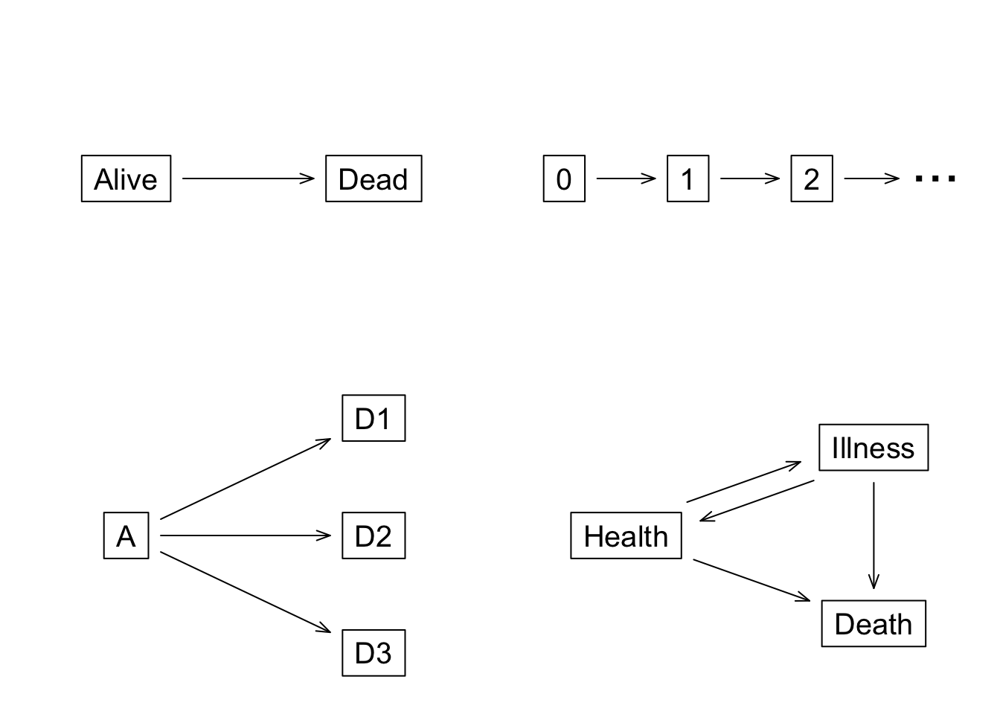
A multi-state model is used to model a process where subjects transition from one state to the next. For instance, a standard survival curve can be thought of as a simple multi-state model with two states (alive and dead) and one transition between those two states. A diagram illustrating this process is shown in the top left corner of Figure 1. In these types of diagrams, each box is a state and each arrow is a possible transition. The lower left diagram depicts a classic competing risk analysis, where all subjects start on the left and each subject can make a single transition to one of 3 terminal states. The bottom right diagram shows a common multi-state situation known as the illness-death model with recovery. Finally, the upper right diagram represents sequential events, such as repeated infections in the CGD study. In that case one subject had 8 events so there are 9 states corresponding to entry into the study (0 infections) and the first, second, , eighth events.
As will be shown below, there are often multiple choices for the state and transition diagram, and for some data sets it is revealing to look at a problem from multiple views. In addition to deciding the diagram that best matches the research questions, the two other primary decisions are the choice of time scale for the fits, e.g., time from entry in the study vs. time from entry in the state, and what covariates will be used.
Multi-state curves
Aalen-Johansen estimate
As a starting point for the analysis, it is important to compute and plot estimates of \(p(t)\), which is a vector containing the probability of being in each of the states at time \(t\). If there is no censoring then \(p\) becomes a simple tabulation at time \(t\) of all the states. For the general case, we compute this using the Aalen-Johansen estimate via the survfit function.
Mathematically the estimate is simple. For each unique time where an event occurs, form the transition matrix \(T(t)\) with elements or rates of \(\lambda_{ij}(t) =\) the fraction of subjects who transition from state \(i\) to \(j\) at time \(t\), among those in state \(i\) just prior to time \(t\). (\(T\) is equal to the identity matrix at any time point without an observed transition.) Then
\[ p(t) = p(0) \prod_{s \le t} T(s) \tag{1}\]
where \(p(0)\) is the initial distribution of subjects.
Let’s work this out for the simple two-state alive \(\rightarrow\) {death} model. Let \(n(t)\) be the number of subjects still at risk at time \(t\) and \(d(t)\) the number of deaths at that time point. All subjects start in the alive state and thus \(p(0) = (1,0)\) and the transition matrix is
\[ T(s) = \left( \begin{array}{cc} \frac{n(s)- d(s)}{n(s)} & \frac{d(s)}{n(s)} \\\\ 0 & 1 \end{array} \right) \]
The two rows are “start in state 1 (alive)” and “start in state 2” and the two colums are “finish in state 1”, “finish in state 2 (death)”. The second row corresponds to the fact that death is an absorbing state: the probability of a death \(\rightarrow\) alive transition (lower left element) is 0.
Writing out the matrices for the first few transitions and multiplying them leads to
\[ p_1(t) = \prod_{s \le t} \left[n(s) - d(s)\right] /n(s) \tag{2}\]
which we recognize as the Kaplan-Meier estimate of survival. For the two state alive-dead model the Aalen-Johansen (AJ) estimate has reprised the KM. In the competing risks case \(p(t)\) has an alternate form known as the cumulative incidence (CI) function
\[ CI_k(t) = \int_0^t \lambda_k(u) S(u) du \tag{3}\]
where \(\lambda_k\) is the incidence function for outcome \(k\), and \(S\) is the overall survival curve for “time to any endpoint”. Repeating the same matrix exercise for the competing risks, i.e. writing out the Aalen-Johansen computation, exactly recovers the CI formula. The CI is also a special case of the Aalen-Johansen. (The label “cumulative incidence” is one of the more unfortunate ones in the survival lexicon, since we normally use ‘incidence’ and ‘hazard’ as interchangeable synonyms but the CI is not a cumulative hazard.) The AJ estimate is very flexible; subjects can visit multiple states during the course of a study, subjects can start after time 0 (delayed entry), and they can start in any of the states. The survfit function implements the AJ estimate and will handle all these cases.
The standard error of the estimates is computed using an infinitesimal jackknife. Let \(D(t)\) be a matrix with one row per subject and one column per state. Each row contains the change in \(p(t)\) corresponding to subject \(i\), i.e., the derivative of \(p\) with respect to the \(i\)th subject’s case weight \(dp(t)/dw_i\). Then \(V(t) = D'WD\) is the estimated variance-covariance matrix of the estimates at time \(t\), where \(W\) is a diagonal matrix of observation weights.
If a single subject is represented by multiple rows in the data set, then \(D\) is first collapsed to have one row per subject, the new row for subject \(i\) is the sum of the rows for the observations that represented the subject. This is essentially the same algorithm as the robust variance for a Cox model. For simple two state alive -> dead model without case weights, the IJ estimate of variance is identical to the traditional Greenwood estimate for the variance of the survival curve \(S\). (This was a surprise when we first observed it; proving the equivalence is not straightforward.)
The \(p(t)\) vector obeys the obvious constraint that its sum at any time is equal to one; i.e., each person has to be somewhere. We will use the phrase probability in state or simply \(p\) when referring to the vector.
In the simple two state model Pr(alive) is the usual KM survival estimate, and we have \(p_1(t) = 1- p_2(t)\), Pr(alive) = 1 - Pr(dead). Plots for the 2 state case sometimes choose to show Pr(alive) and sometimes Pr(dead). Which one is used often depends on a historical whim of the disease specialty; cardiology journals for instance quite often use Pr(event) resulting in curves that rise starting from zero, while oncology journals invariably use Pr(alive) giving curves that fall downhill from 1. The survfit routine’s historical default for the 2 state case is to print and plot Pr(alive)= \(p_1(t)\), which reflects that the author of the routine was working primarily in cancer trials at the time said default was chosen.
For simple survival we have gotten used to the idea of using Pr(dead) and Pr(alive) interchangeably, but that habit needs to be left behind for multi-state models, as curves of \(1-p_k(t)\) = probability(any other state than \(k\)) are not useful. In the multi-state case, some curves will rise and then fall. For competing risks the curve for the initial state (leftmost in the diagram) is rarely included in the final plot. Since the curves sum to 1, the full set is redundant. Pr(nothing yet) is usually the least interesting of the set and so it is left off to make the plot less busy. The remaining curves in the competing risks case rise from 0. (This bothers some researchers as it ‘just looks wrong’ to them.)
Examples
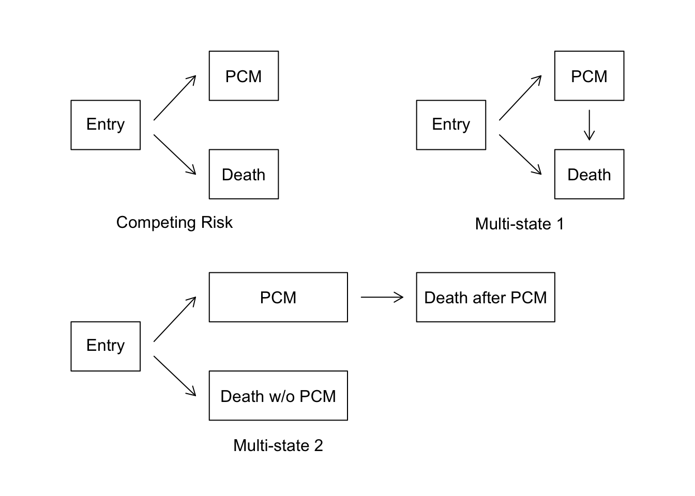
Start with a simple competing risks problem as illustrated in the first diagram of Figure 2. The mgus2 data set contains the time to plasma cell malignancy (PCM) and/or death for 1384 subjects diagnosed with monoclonal gammopathy of undetermined significance (MGUS). Survival and progression time are in months. The code below creates an ordinary Kaplan-Meier curve of post-diagnosis survival for these subjects, along with a histogram of age at diagnosis. The mean age at diagnosis is just over 70 years.
oldpar <- par(mfrow = c(1, 2))
hist(mgus2$age, nclass = 30, main = "", xlab = "Age")
with(mgus2, tapply(age, sex, mean)) F M
71.32171 69.67065 mfit1 <- survfit(Surv(futime, death) ~ sex, data = mgus2)
mfit1Call: survfit(formula = Surv(futime, death) ~ sex, data = mgus2)
n events median 0.95LCL 0.95UCL
sex=F 631 423 108 100 121
sex=M 753 540 88 79 97plot(mfit1,
col = c(1, 2), xscale = 12, mark.time = FALSE, lwd = 2,
xlab = "Years post diagnosis", ylab = "Survival"
)
legend("topright", c("female", "male"), col = 1:2, lwd = 2, bty = "n")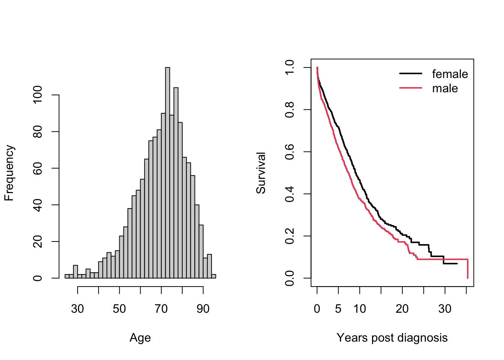
par(oldpar)The xscale and yscale arguments to plot.survfit affect only the axis labels, not the data. Further additions to the plot region such as legend, lines, or text remain in the original scale. This simplifies programmatic additions such as adding another curve to the plot, while making interactive additions such as a legend somewhat less simple.
As a second model for these subjects we will use competing risks (CR), where PCM and death without malignancy are the two terminal states, as shown in the upper left of Figure 2. In a CR model we are only interested in the first event for each subject. Formally we are treating progression to a PCM as an absorbing state, i.e., one that subjects never exit. We create a variable etime containing the time to the first of progression, death, or last follow-up along with an event variable that contains the outcome. The starting data set mgus2 has two pairs of variables (ptime, pstat) that contain the time to progression and (futime, status) that contain the time to death or last known alive. The code below creates the necessary etime and event variables, then computes and plots the competing risks estimate.
mgus2$etime <- with(mgus2, ifelse(pstat == 0, futime, ptime))
event <- with(mgus2, ifelse(pstat == 0, 2 * death, 1))
mgus2$event <- factor(event, 0:2, labels = c("censor", "pcm", "death"))
table(mgus2$event)
censor pcm death
409 115 860 mfit2 <- survfit(Surv(etime, event) ~ sex, data = mgus2)
print(mfit2, rmean = 240, scale = 12)Call: survfit(formula = Surv(etime, event) ~ sex, data = mgus2)
n nevent rmean*
sex=F, (s0) 631 0 9.853608
sex=M, (s0) 753 0 8.675012
sex=F, pcm 631 59 1.323284
sex=M, pcm 753 56 1.064693
sex=F, death 631 370 8.823108
sex=M, death 753 490 10.260294
*restricted mean time in state (max time = 20 )mfit2$transitions to
from pcm death (censored)
(s0) 115 860 409
pcm 0 0 0
death 0 0 0plot(mfit2,
col = c(1, 2, 1, 2), lty = c(2, 2, 1, 1),
mark.time = FALSE, lwd = 2, xscale = 12,
xlab = "Years post diagnosis", ylab = "Probability in State"
)
legend(240, .6, c("death:female", "death:male", "pcm:female", "pcm:male"),
col = c(1, 2, 1, 2), lty = c(1, 1, 2, 2), lwd = 2, bty = "n"
)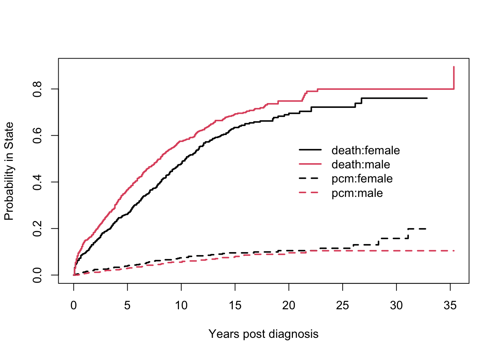
The mfit2 call is nearly identical to that for an ordinary Kaplan-Meier, with the exception of the event variable.
The event variable was created as a factor, whereas for ordinary single state survival the status is either 0/1 or TRUE/FALSE. The first level of the factor must be censoring, which is the status code for those whose follow-up terminated without reaching a new endpoint. Codes for the remaining states can be in any order. The labels for the states are unrestricted, e.g., the first one does not have to be “censor”. (It will be treated as ‘no event at this time’, whatever the label.)
A simple print of the
mfit2object shows the order in which the curves will be displayed. This information was used to choose the line types and colors for the curves.The
mfit2object contains curves for all the states, but by default the entry state will not be plotted. The remaining curves all start at 0.The transitions component of the result is useful as a data check, e.g., if it showed a transition from death to PCM.
Each subject’s initial state can be specified by the
istateargument. When this is omitted all subjects are assumed to start from an entry state named ‘(s0)’. This default name is an amalgam of “state 0”, a label sometimes used in textbooks for the leftmost box, and an R convention of using () for constructed names, e.g., ‘(Intercept)’ from an lm() call.
The printout shows that a male subject will spend, on average, 8.7 of his first 20 years post diagnosis in the entry state, 1.1 years in the PCM state and 10.3 of those 20 in the death state. If a cutoff time is not given the default is to use the maximum observed time for all curves, which is 424 months in this case.
The result of a multi-state survfit is a matrix of probabilities with one row per time and one column per state. These are contained in the probability-in-state (pstate) component of the resulting survfit object. Since the three MGUS states of entry/pcm/death must sum to 1 at any given time (everyone has to be somewhere), one of the three curves is redundant and the “fraction still in the entry state” curve is normally the least interesting. By default, any state with the label ‘(s0)’ is left off of the plot; which is the default value of the noplot option of plot.survfit. One can easily plot all of the states by setting the option to NULL.
A common mistake with competing risks is to use the Kaplan-Meier separately on each event type while treating other event types as censored. The next plot is an example of this for the PCM endpoint.
pcmbad <- survfit(Surv(etime, pstat) ~ sex, data = mgus2)
plot(pcmbad[2],
lwd = 2, fun = "event", conf.int = FALSE, xscale = 12,
xlab = "Years post diagnosis", ylab = "Fraction with PCM"
)
lines(mfit2[2, "pcm"], lty = 2, lwd = 2, mark.time = FALSE, conf.int = FALSE)
legend(0, .25, c("Males, PCM, incorrect curve", "Males, PCM, competing risk"),
col = 1, lwd = 2, lty = c(1, 2), bty = "n"
)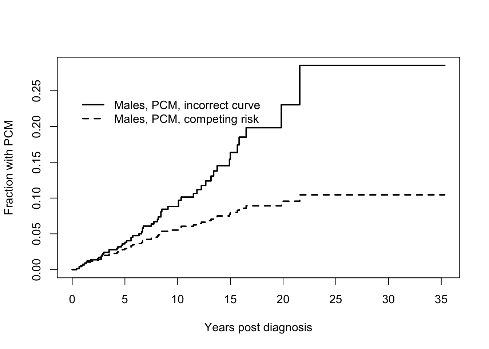
There are two problems with the pcmbad fit. The first is that it attempts to estimate the expected occurrence of plasma cell malignancy (PCM) if all other causes of death were to be disallowed. In this hypothetical world it is indeed true that many more subjects would progress to PCM (the incorrect curve is higher), but it is also not a world that any of us will ever inhabit. This author views the result in much the same light as discussions of survival after the zombie apocalypse. The second problem is that the computation for this hypothetical case is only correct if all of the competing endpoints are independent, a situation which is almost never true. We thus have an unreliable estimate of an uninteresting quantity. The competing risks curve, on the other hand, estimates the fraction of MGUS subjects who will experience PCM, a quantity sometimes known as the lifetime risk, and one which is actually observable.
The last example chose to plot only a subset of the curves, something that is often desirable in competing risks problems to avoid a “tangle of yarn” plot that simply has too many elements. This is done by subscripting the survfit object. For subscripting, multi-state curves behave as a matrix with the outcomes as the second subscript. The columns are in order of the levels of event, i.e., as displayed by our earlier call to table(event). The first subscript indexes the groups formed by the right hand side of the model formula, and will be in the same order as simple survival curves. Thus mfit2[2,1] corresponds to males (2) and the PCM endpoint (1). Curves are listed and plotted in the usual matrix order of R.
A third example using the MGUS data treats it as a multi-state model and it shown in the upper right of Figure 2. In this version a subject can have multiple transitions and thus multiple rows in the data set. In this case it is necessary to identify which data rows go with which subject via the id argument of survfit; valid estimates of the curves and their standard errors both depend on this. Our model looks like the illness-death model of Figure 1 but with “PCM” as the upper state and no arrow for a return from that state to health. The necessary data set will have two rows for any subject who has further follow-up after a PCM and a single row for all others. The data set is created below using the tmerge function, which is discussed in detail in another vignette.
We need to decide what to do with the 9 subjects who have PCM and death declared at the same month. (Some of these were cancer cases discovered at autopsy.) They slipped through without comment in the earlier competing risks analysis; only when setting up this second data set did we notice the ties. Looking back at the code, the prior example counted these subjects as a progression. In retrospect this is a defensible choice: even though undetected before death, the disease must have been present for some amount of time previous and so progression did occur first. For the multi-state model we need to be explicit in how this is coded since a sojourn time of 0 within a state is not allowed. Below we push the progression time back by .1 month when there is a tie, but that amount is entirely arbitrary. Since there are 3 possible transitions we will call the data set data3.
ptemp <- with(mgus2, ifelse(ptime == futime & pstat == 1, ptime - .1, ptime))
data3 <- tmerge(mgus2, mgus2,
id = id, death = event(futime, death),
pcm = event(ptemp, pstat)
)
data3 <- tmerge(data3, data3, id, enum = cumtdc(tstart))
with(data3, table(death, pcm)) pcm
death 0 1
0 421 115
1 963 0The table above shows that there are no observations in data3 that have both a PCM and death, i.e., the ties have been resolved. The last tmerge line above creates a variable enum which simply counts rows for each person, which is often useful.
temp <- with(data3, ifelse(death == 1, 2, pcm))
data3$event <- factor(temp, 0:2, labels = c("censor", "pcm", "death"))
mfit3 <- survfit(Surv(tstart, tstop, event) ~ sex, data = data3, id = id)
print(mfit3, rmean = 240, digits = 2)Call: survfit(formula = Surv(tstart, tstop, event) ~ sex, data = data3,
id = id)
n nevent rmean*
sex=F, (s0) 690 0 118.2
sex=M, (s0) 809 0 104.1
sex=F, pcm 690 59 3.2
sex=M, pcm 809 56 2.7
sex=F, death 690 423 118.6
sex=M, death 809 540 133.2
*restricted mean time in state (max time = 240 )mfit3$transitions to
from pcm death (censored)
(s0) 115 860 409
pcm 0 103 12
death 0 0 0plot(mfit3[, "pcm"],
mark.time = FALSE, col = 1:2, lty = 1:2, lwd = 2,
xscale = 12,
xlab = "Years post MGUS diagnosis", ylab = "Fraction in the PCM state"
)
legend(40, .4, c("female", "male"), lty = 1:2, col = 1:2, lwd = 2, bty = "n")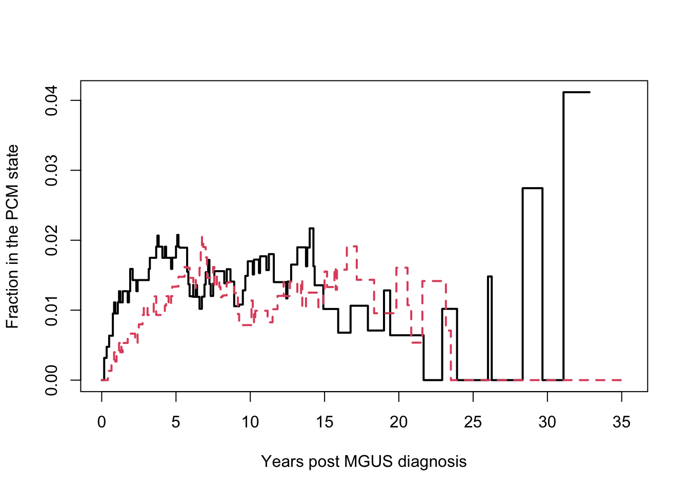
This plot is quite different in that it shows the fraction of subjects currently in the PCM state. Looking at our multi-state diagram this is the fraction of subjects in the upper right PCM box. The curve goes up whenever someone enters the box (progression) and down when they leave (death). Myeloma survival was quite short during the era of this study — most subjects died within 1 year of PCM — and the proportion currently in the PCM state rarely rises above 2 percent.
The result of print(mfit3) reveals, as expected, less time spent in the PCM state. In the prior mfit2 model, subjects who enter that state remain there for the duration; in this one they quickly pass through. It is worthwhile to check the transitions table in the output, simply as a data check, since an error in creating the input data can lead to surprising counts and an even more surprising curve. In this case it shows subjects going from the entry state to PCM and death along with transitions from PCM to death. This is as expected.
We have often found the three curve display shown below useful in the case of a transient state. It combines the results from competing risk model used above along with a second fit that treats death after PCM as a separate state from death before progression, the multi-state 2 model of Figure 2. In this plot the fraction of subjects currently in the PCM state is shown by the distance between the two curves. Only males are shown in the plot to minimize overlap.
# Death after PCM will correspond to data rows with
# enum = 2 and event = death
d2 <- with(data3, ifelse(enum == 2 & event == "death", 4, as.numeric(event)))
e2 <- factor(d2, labels = c(
"censor", "pcm", "death w/o pcm",
"death after pcm"
))
mfit4 <- survfit(Surv(tstart, tstop, e2) ~ sex, data = data3, id = id)
plot(mfit2[2, ],
lty = c(1, 2),
xscale = 12, mark.time = FALSE, lwd = 2,
xlab = "Years post diagnosis", ylab = "Probability in State"
)
lines(mfit4[2, 4],
mark.time = FALSE, col = 2, lty = 1, lwd = 2,
conf.int = FALSE
)
legend(200, .5, c(
"Death w/o PCM", "ever PCM",
"Death after PCM"
),
col = c(1, 1, 2), lty = c(2, 1, 1),
lwd = 2, bty = "n", cex = .82
)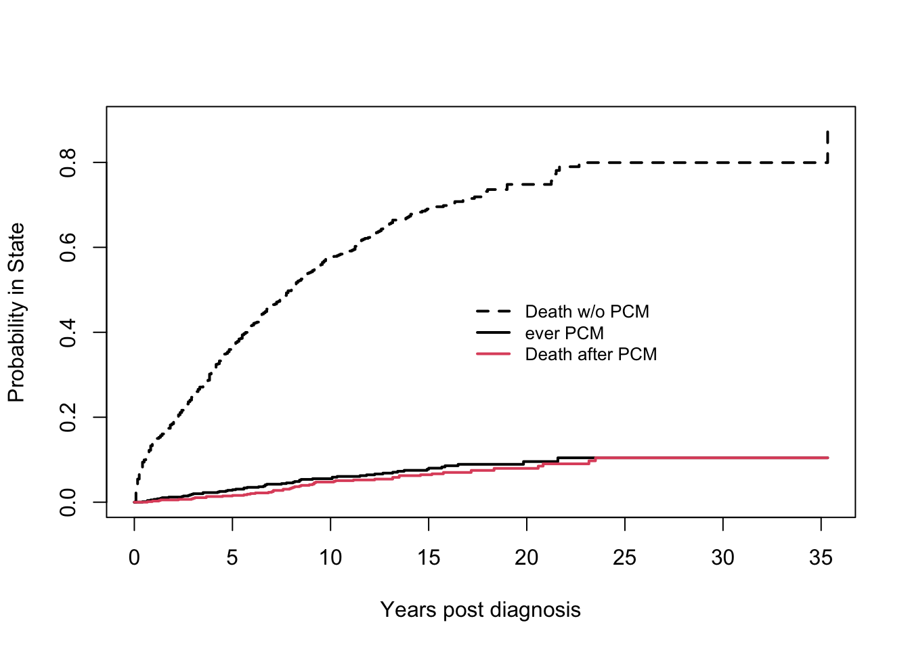
Further notes
The Aalen-Johansen method used by survfit does not account for interval censoring, also known as panel data, where a subject’s current state is recorded at some fixed time such as a medical center visit but the actual times of transitions are unknown. Such data requires further assumptions about the transition process in order to model the outcomes and has a more complex likelihood. The msm package, for instance, deals with data of this type. If subjects reliably come in at regular intervals then the difference between the two results can be small, e.g., the msm routine estimates time until progression occurred whereas survfit estimates time until progression was observed.
When using multi-state data to create Aalen-Johansen estimates, individuals are not allowed to have gaps in the middle of their time line. An example of this would be a data set with (0, 30, pcm] and (50,70, death] as the two observations for a subject where the time from 30-70 is not accounted for.
Subjects must stay in the same group over their entire observation time, i.e., variables on the right hand side of the equation cannot be time-dependent.
A transition to the same state is allowed, e.g., observations of (0,50, 1], (50, 75, 3], (75, 89, 4], (89, 93, 4] and (93, 100, 4] for a subject who goes from entry to state 1, then to state 3, and finally to state 4. However, a warning message is issued for the data set in this case, since stuttering may instead be the result of a coding mistake. The same result is obtained if the last three observations were collapsed to a single row of (75, 100, 4].
Rate models
For simple two-state survival, the Cox model leads to three relationships
\[\lambda(t) = \lambda_0(t) e^{X\beta} \tag{4}\] \[\Lambda(t) = \Lambda_0(t) e^{X\beta} \tag{5}\] \[S(t) = \exp(-\Lambda(t)) \tag{6}\]
where \(\lambda\), \(\Lambda\) and \(S\) are the hazard, cumulative hazard and survival functions, respectively. There is a single linear predictor which governs both the rate \(\lambda\) (the arrow in Figure 1) and probability of residing in the left hand box of the figure. For multi-state models this simplicity no longer holds; proportional hazards does not lead to proportional \(p(t)\) curves. There is a fundamental dichotomy in the analysis namely that
- hazards can be computed one at a time,
- probability in state must be done for all states at once.
The analysis of multi-state data has four key steps. In order of importance:
Draw a box and arrow figure describing the model.
Think through the rates (arrows).
- Which covariates should be attached to each rate? Sometimes a covariate is important for one transition, but not for another.
- For which transitions should one or more of the covariates be constrained to have the same coefficient? Sometimes there will be a biologic rationale for this. For other studies an equivalence is forced simply because we have too many unknowns and cannot accommodate them all. (This is the same reason that models often contain very few interaction terms).
- Which, if any, of the transitions should share the same baseline hazard? Most of the time the baseline rates are all assumed to be different.
- Should there be random effects, and if so what is an appropriate correlation structure? Do some pairs of transitions have a shared effect, some pairs separate effects and others no random effect? Mixed effects Cox models tend to need larger sample size — does the data set have enough events?
Build an appropriate data set.
Fit the data. Examine multiple summaries of the model fit, including the predicted occupancy curves.
Step 1 is key to the entire endeavor. We saw in Figure 2 and the examples above that multiple views of a multi-state process can be useful, and this will hold for modeling as well. Step 3 will often be the one that demands the most attention to detail.
MGUS example
Start with the simplest model for the MGUS data:
a competing risks model (upper left diagram of Figure 2), distinct baseline hazards for the two rates, no shared coefficients, and three covariates.
options(show.signif.stars = FALSE) # display intelligence
cfit1 <- coxph(Surv(etime, event) ~ age + sex + mspike, mgus2, id = id)
cfit1$cmap 1:2 1:3
age 1 4
sexM 2 5
mspike 3 6print(cfit1, digits = 2)Call:
coxph(formula = Surv(etime, event) ~ age + sex + mspike, data = mgus2,
id = id)
1:2 coef exp(coef) se(coef) robust se z p
age 0.0164 1.0165 0.0084 0.0069 2.4 0.02
sexM -0.0050 0.9950 0.1884 0.1880 0.0 0.98
mspike 0.8841 2.4208 0.1652 0.1683 5.3 2e-07
1:3 coef exp(coef) se(coef) robust se z p
age 0.0652 1.0674 0.0036 0.0037 17.4 <2e-16
sexM 0.3889 1.4754 0.0699 0.0666 5.8 5e-09
mspike -0.0593 0.9425 0.0639 0.0620 -1.0 0.3
States: 1= (s0), 2= pcm, 3= death
Likelihood ratio test=419 on 6 df, p=<2e-16
n= 1373, number of events= 969
(11 observations deleted due to missingness)This above call fits both endpoints at once. The resulting R object contains a single vector of coefficients, the cmap component documents which goes with which endpoint and is used by the print routine to organize the printout. We see that the effect of age and sex on non-PCM mortality is profound, which is not a surprise given the median starting age of 72. Risk rises 1.9 fold per decade of age and the death rate for males is 1.5 times as great as that for females. The size of the serum monoclonal spike has almost no impact on non-PCM mortality. A 1 unit increase changes mortality by only 6%.
The mspike size has a major impact on progression, however; each 1 gram change increases risk by 2.4 fold. The interquartile range of mspike is 0.9 gram so this risk increase is clinically important. The effect of age on the progression rate is much less pronounced, with a coefficient only 1/4 that for mortality, while the effect of sex on progression is completely negligible.
The effect of sex on the lifetime probability of PCM is not zero, however. Because females live longer, a female with MGUS will on average spend more total years at risk for PCM than the average male, and so has a larger lifetime risk of PCM. The average rate of progression is about 1% per year, as shown below, while the mean post diagnosis lifetime is 19 months longer for females. The overall effect is a 1.6% increase in lifetime risk.
pfit1 <- pyears(Surv(ptime, pstat) ~ sex, mgus2, scale = 12)
round(100 * pfit1$event / pfit1$pyears, 1) # PCM rate per yearsex
F M
1.1 1.0 temp <- summary(mfit1, rmean = "common") # print the mean survival time
round(temp$table[, 1:6], 1) records n.max n.start events rmean se(rmean)
sex=F 631 631 631 423 143.5 6.4
sex=M 753 753 753 540 125.0 5.7The same Cox model coefficients can also be obtained by fitting separate models for the PCM and death endpoint, censoring cases that fail due to the other cause. Hazards can be computed one at a time. When computing \(p(t)\), on the other hand, all the rates must be considered at once, it is necessary to use the joint fit cfit1 above. We create predicted curves for four hypothetical subjects below.
dummy <- expand.grid(sex = c("F", "M"), age = c(60, 80), mspike = 1.2)
dummy sex age mspike
1 F 60 1.2
2 M 60 1.2
3 F 80 1.2
4 M 80 1.2csurv <- survfit(cfit1, newdata = dummy)
dim(csurv) data states
4 3 The resulting set of Aalen-Johansen estimates can be indexed as though it were an array. There is only one stratum (the Cox model did not have strata), four hypothetical subjects, and 3 states. (When there is only a single stratum, as here, the subscript method allows that index to be omitted, for backwards compatability).
plot(csurv[, "pcm"],
xmax = 25 * 12, xscale = 12,
xlab = "Years after MGUS diagnosis", ylab = "PCM",
col = 1:2, lty = c(1, 1, 2, 2), lwd = 2
)
legend(10, .14, outer(c("female", "male "),
c("diagnosis at age 60", "diagnosis at age 80"),
paste,
sep = ", "
),
col = 1:2, lty = c(1, 1, 2, 2), bty = "n", lwd = 2
)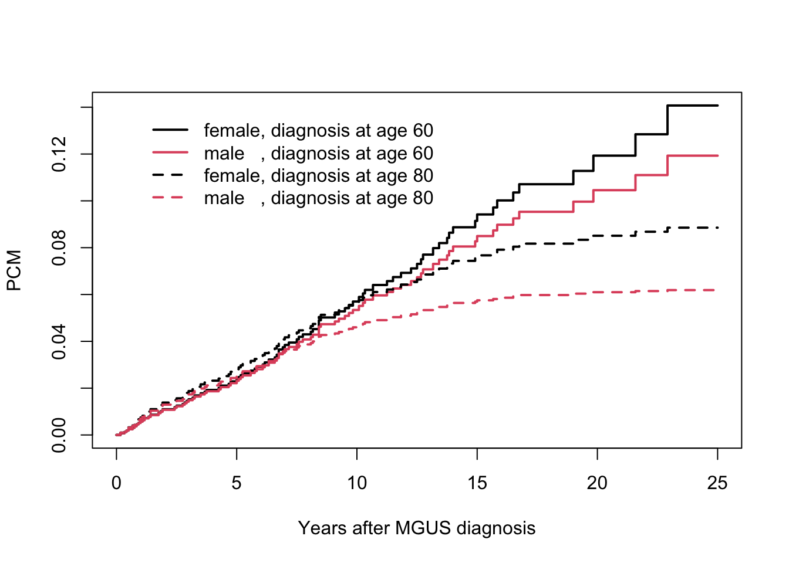
The individual survival curves that would result from fitting each endpoint separately are not actually of interest, since each will be a Cox model analog of the pcmbad curve we criticized earlier.
The coxph fits showed that sex has nearly no effect on the hazard of PCM, i.e., on any given day the risk of conversion for a male is essentially the same as for a female of the same age. Yet we see above that the fitted Cox models predict a higher lifetime risk for females; this is due to a longer lifespan. The age effect on lifetime risk that is far from proportional: the 80 year curves flatten out while predictions for the younger subjects do not. Very few subjects acquire PCM more than 15 years after a MGUS diagnosis at age 80 for the obvious reason: very few of them will still be alive.
# Print out a M/F results at 20 years
temp <- summary(csurv, time = 20 * 12)$pstate
cbind(dummy, PCM = round(100 * temp[, , 2], 1)) sex age mspike PCM
1 F 60 1.2 11.9
2 M 60 1.2 10.5
3 F 80 1.2 8.5
4 M 80 1.2 6.1The above table shows that females are predicted to have a higher risk of 20 year progression, even though their hazard at any given moment is nearly identical to males. The female/male difference at 20 years is on the order of our “back of the napkin” person-years estimate of 1% progression per year * 1.7 more years of life for the females, but the progression fraction varies substantially by group.
Fine-Gray model
For the competing risk case the Fine-Gray model provides an alternate way of looking at the data. As we saw above, the impact of a particular covariate on the final values \(P\) can be complex, even if the models for the hazards are relatively simple.
The primary idea of the Fine-Gray approach is to turn the multi-state problem into a collection of two-state ones. In the upper right diagram of Figure 2, draw a circle around all of the states except the chosen endpoint and collapse them into a single meta-state. For the MGUS data these are
- Model 1
- left box: All subjects in the entry or “death first” state
- right box: PCM
- Model 2
- left box: All subjects in the entry or “PCM first” state
- right box: Death (without PCM)
An interesting aspect of this is that the fit can be done as a two stage process: the first stage creates a special data set while the second fits a weighted coxph or survfit model to the data. The data set can be created using the finegray command.
# (first three lines are identical to an earlier section)
etime <- with(mgus2, ifelse(pstat == 0, futime, ptime))
event <- with(mgus2, ifelse(pstat == 0, 2 * death, 1))
event <- factor(event, 0:2, labels = c("censor", "pcm", "death"))
pcmdat <- finegray(Surv(etime, event) ~ .,
data = mgus2,
etype = "pcm"
)
pcmdat[1:4, c(1:3, 11:14)] id age sex death fgstart fgstop fgstatus
1 1 88 F 1 0 35 0
2 1 88 F 1 35 44 0
3 1 88 F 1 44 47 0
4 1 88 F 1 48 52 0deathdat <- finegray(Surv(etime, event) ~ .,
data = mgus2,
etype = "death"
)
dim(pcmdat)[1] 41775 15dim(deathdat)[1] 12910 15dim(mgus2)[1] 1384 13The finegray command has been used to create two data sets: one for the PCM endpoint and one for the death endpoint. In each, four new variables have been added containing a survival time (fgstart, fgstop, fgstatus) with an ‘ordinary’ status of 0/1, along with a case weight and a large number of new rows. We can use this new data set as yet another way to compute multi-state survival curves, though there is no good reason to use this rather roundabout approach instead of the simpler survfit(Surv(etime, event) \textasciitilde sex).
# The PCM curves of the multi-state model
pfit2 <- survfit(Surv(fgstart, fgstop, fgstatus) ~ sex,
data = pcmdat, weight = fgwt
)
# The death curves of the multi-state model
dfit2 <- survfit(Surv(fgstart, fgstop, fgstatus) ~ sex,
data = deathdat, weight = fgwt
)Inspection shows that the two new curves are almost identical to the prior estimates based on the Aalen-Johansen estimate (mfit2), and in fact would be identical if we had accounted for the slightly different censoring patterns in males and females (by adding strata(sex) to the right hand side of the finegray formulas).
A Cox model fit to the constructed data set yields the Fine-Gray models for PCM and for death.
fgfit1 <- coxph(Surv(fgstart, fgstop, fgstatus) ~ sex,
data = pcmdat,
weight = fgwt
)
summary(fgfit1)Call:
coxph(formula = Surv(fgstart, fgstop, fgstatus) ~ sex, data = pcmdat,
weights = fgwt)
n= 41775, number of events= 115
coef exp(coef) se(coef) robust se z Pr(>|z|)
sexM -0.2290 0.7953 0.1866 0.1813 -1.263 0.207
exp(coef) exp(-coef) lower .95 upper .95
sexM 0.7953 1.257 0.5574 1.135
Concordance= 0.528 (se = 0.024 )
Likelihood ratio test= 1.51 on 1 df, p=0.2
Wald test = 1.6 on 1 df, p=0.2
Score (logrank) test = 1.51 on 1 df, p=0.2, Robust = 1.57 p=0.2
(Note: the likelihood ratio and score tests assume independence of
observations within a cluster, the Wald and robust score tests do not).fgfit2 <- coxph(Surv(fgstart, fgstop, fgstatus) ~ sex,
data = deathdat,
weight = fgwt
)
fgfit2Call:
coxph(formula = Surv(fgstart, fgstop, fgstatus) ~ sex, data = deathdat,
weights = fgwt)
coef exp(coef) se(coef) robust se z p
sexM 0.23349 1.26299 0.06894 0.06427 3.633 0.00028
Likelihood ratio test=11.57 on 1 df, p=0.0006703
n= 12910, number of events= 860 mfit2 <- survfit(Surv(etime, event) ~ sex, data = mgus2) # reprise the AJ
plot(mfit2[, "pcm"],
col = 1:2,
lwd = 2, xscale = 12,
conf.times = c(5, 15, 25) * 12,
xlab = "Years post diagnosis", ylab = "Fraction with PCM"
)
ndata <- data.frame(sex = c("F", "M"))
fgsurv1 <- survfit(fgfit1, ndata)
lines(fgsurv1, fun = "event", lty = 2, lwd = 2, col = 1:2)
legend("topleft", c(
"Female, Aalen-Johansen", "Male, Aalen-Johansen",
"Female, Fine-Gray", "Male, Fine-Gray"
),
col = 1:2, lty = c(1, 1, 2, 2), bty = "n"
)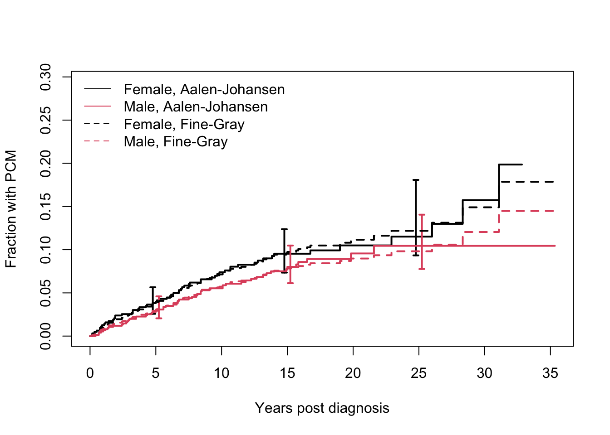
# rate models with only sex
cfitr <- coxph(Surv(etime, event) ~ sex, mgus2, id = id)
rcurve <- survfit(cfitr, newdata = ndata)
# lines(rcurve[, 'pcm'], col=6:7) # makes the plot too crowsdedThe FG model states that males have a less observed PCM, by a factor of 0.8, and that this hazard ratio is constant over time. An overlaid plot of the non-parametric Aalen-Johansen estimates for the PCM state (from survfit) along with predicted curves from the Fine-Gray model show that proportional hazards is not unreasonable for this particular fit. The predicted values from the rate model, computed just above but not plotted on the curve, also fit well with the data.
When there is only a single categorical 0/1 covariate the Fine-Gray model reduces to Gray’s test of the subdistribution function, in the same way that a coxph fit with a single categorical predictor is equivalent to the log-rank test.
The mathematics behind the Fine-Gray estimate starts with the functions \(F_k(t) = p_k(t)\), where \(p\) is the probability in state function estimated by the AJ estimate. This can be thought of as the distribution function for the improper random variable \(T^*= I(\mbox{event type}=k)T + I(\mbox{event type}\ne k)\infty\). Fine and Gray refer to \(F_k\) as a subdistribution function. In analogy to the survival probability in the two state model define
\[ \gamma_k(t) = - d \log[1-F_k(t)]/dt \tag{7}\]
and assume that \(\gamma_k(t;x) = \gamma_{k0}(t) \exp(X\beta)\). In a 2 state alive \(\longrightarrow\) death model, \(\gamma\) becomes the usual hazard function \(\lambda\).
In the same way that our multivariate Cox model cfit1 made the simplifying assumption that the impact of male sex is to increase the hazard for death by a factor of ’r round(exp(coef(cfit1)[5]), 2)`, independent of the subject’s age or serum mspike value, the Fine-Gray model assumes that each covariate’s effect on \(\log(1-F)\) is a constant, independent of other variables. Both model’s assumptions are wonderfully simplifying with respect to understanding a covariate, since we can think about each covariate separately from all the others. This is, of course, under the assumption that the model is correct: that additivity across covariates, linearity, and proportional hazards all hold.
In a multi-state model, however, these assumptions cannot hold for both the per-transition and Fine-Gray models formulations at the same time; if true for one, they will not be true for the other.
Now consider a multivariate fit on age, sex, and serum m-spike.
fgfit2a <- coxph(Surv(fgstart, fgstop, fgstatus) ~ age + sex + mspike,
data = pcmdat, weight = fgwt
)
fgfit2b <- coxph(Surv(fgstart, fgstop, fgstatus) ~ age + sex + mspike,
data = deathdat, weight = fgwt
)
round(rbind(PCM = coef(fgfit2a), death = coef(fgfit2b)), 3) age sexM mspike
PCM -0.017 -0.213 0.888
death 0.059 0.369 -0.154The Fine-Gray fits show an effect of all three variables on the subdistribution rates. Males have a lower lifetime risk of PCM before death and a higher risk of death before PCM, while a high serum m-spike works in the opposite direction. The Cox models showed no effect of sex on the instantaneous hazard of PCM and none for serum m-spike on the death rate. However, as shown in the last section, the Cox models do predict a greater lifetime risk for females. We had also seen that older subjects are less likely to experience PCM due to the competing risk of death; this is reflected in the FG model as a negative coefficient for age.
Now compute predicted survival curves for the model, and show them alongside the predictions from the multi-state Cox model.
oldpar <- par(mfrow = c(1, 2))
dummy <- expand.grid(sex = c("F", "M"), age = c(60, 80), mspike = 1.2)
fsurv1 <- survfit(fgfit2a, dummy) # time to progression curves
plot(fsurv1,
xscale = 12, col = 1:2, lty = c(1, 1, 2, 2), lwd = 2, fun = "event",
xlab = "Years", ylab = "Fine-Gray predicted",
xmax = 12 * 25, ylim = c(0, .15)
)
legend(1, .15, c("Female, 60", "Male, 60", "Female: 80", "Male, 80"),
col = c(1, 2, 1, 2), lty = c(1, 1, 2, 2), lwd = 2, bty = "n"
)
plot(csurv[, 2],
xscale = 12, col = 1:2, lty = c(1, 1, 2, 2), lwd = 2,
xlab = "Years", ylab = "Multi-state predicted",
xmax = 12 * 25, ylim = c(0, .15)
)
legend(1, .15, c("Female, 60", "Male, 60", "Female: 80", "Male, 80"),
col = c(1, 2, 1, 2), lty = c(1, 1, 2, 2), lwd = 2, bty = "n"
)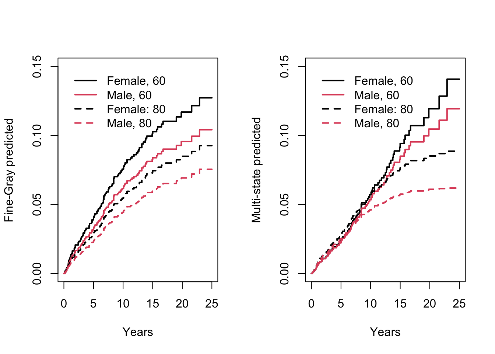
par(oldpar)The predictions as a function of age group are quite different for the Fine-Gray model: new PCM cases are predicted 20+ years after diagnosis in both the old and young age groups, while they are predicted to cease in the multi-state fit. The average of all four curves is nearly the same at each age, but the global proportional hazards assumption of the FG model forces the curves to remain parallel.
We can check the proportional hazards assumption of the models using the cox.zph function, linearity of the continuous variables age and mspike by using non-linear terms such as pspline or ns, and additivity by exploring interactions. All are obvious and important next steps. For instance, the proportional hazards assumption for age shows clear violations.
zph.fgfit2a <- cox.zph(fgfit2a)
zph.fgfit2a chisq df p
age 20.7744 1 5.2e-06
sex 0.2456 1 0.62016
mspike 0.0857 1 0.76966
GLOBAL 20.9965 3 0.00011plot(zph.fgfit2a[1])
abline(h = coef(fgfit2a)[1], lty = 2, col = 2)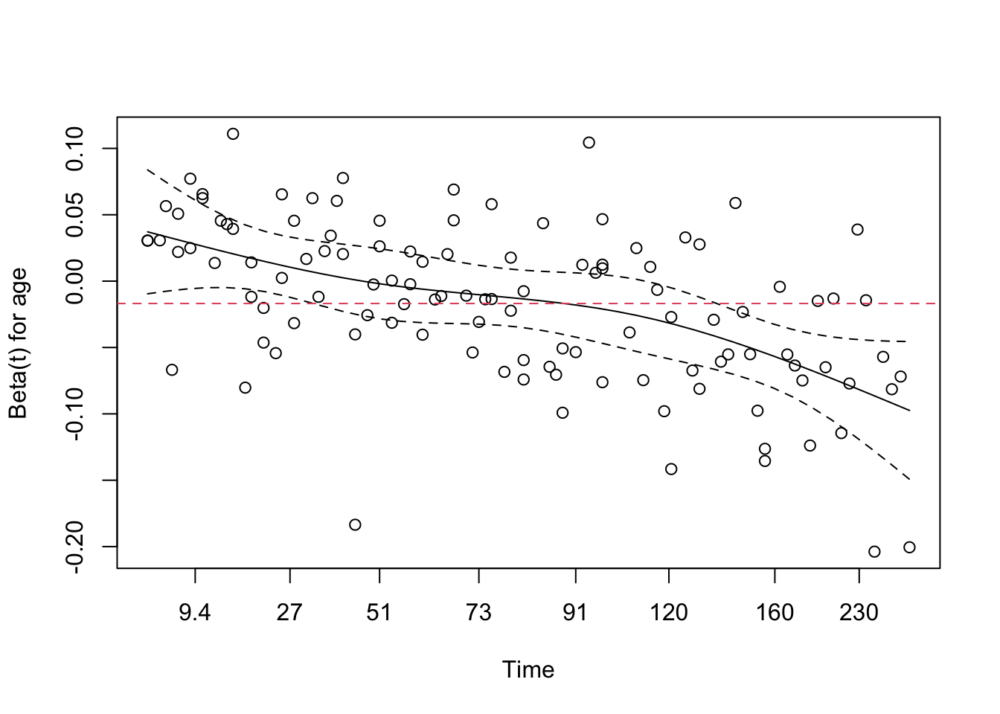
A further weakness of the Fine-Gray approach is that since the two endpoints are modeled separately, the results do not have to be consistent. Below is a graph of the predicted fraction who have experienced neither endpoint. For subjects diagnosed at age 80 the Fine-Gray models predict that more than 100% will either progress or die by 30 years. Predictions based on the Aalen-Johansen approach do not have this issue.
fsurv2 <- survfit(fgfit2b, dummy) # time to progression curves
xtime <- 0:(30 * 12) # 30 years
y1a <- 1 - summary(fsurv1, times = xtime)$surv # predicted pcm
y1b <- 1 - summary(fsurv2, times = xtime)$surv # predicted deaths before pcm
y1 <- (y1a + y1b) # either
matplot(xtime / 12, y1,
col = 1:2, lty = c(1, 1, 2, 2), type = "l",
xlab = "Years post diagnosis", ylab = "FG: either endpoint"
)
abline(h = 1, col = 3)
legend("bottomright", c("Female, 60", "Male, 60", "Female: 80", "Male, 80"),
col = c(1, 2, 1, 2), lty = c(1, 1, 2, 2), lwd = 2, bty = "n"
)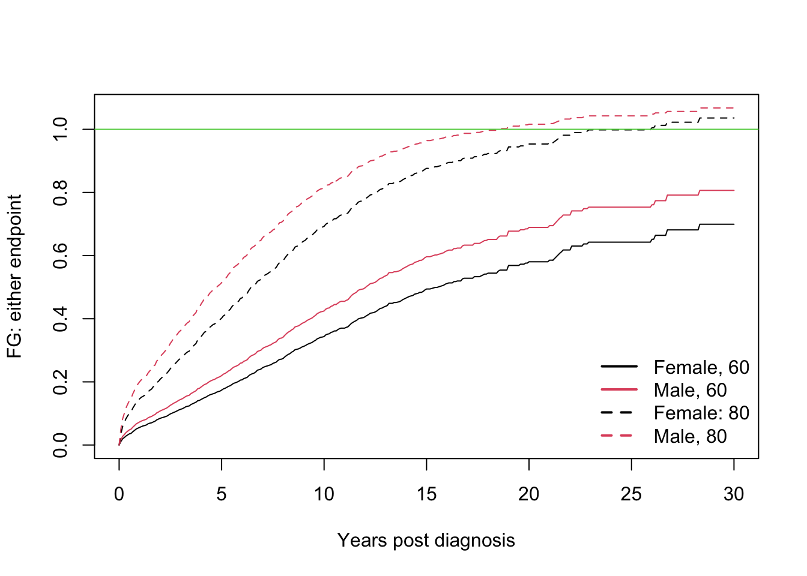
The primary strength of the Fine-Gray model with respect to the Cox model approach is that if lifetime risk is a primary question, then the model has given us a simple and digestible answer to that question: “females have a 1.2 fold higher lifetime risk of PCM, after adjustment for age and serum m-spike”. This simplicity is not without a price, however, and these authors are not proponents of the approach. There are five issues.
The attempt to capture a complex process as a single value is grasping for a simplicity that does not exist for many (perhaps most) data sets.
The necessary assumptions in a multivariate Cox model of proportional hazards, linearity of continuous variables, and no interactions are strong ones. For the FG model these need to hold for a combined process — the mixture of transition rates to each endpoint — which turns out to be a more difficult barrier.
The sum of predictions need not be consistent.
From the per-transition Cox model one can work forward and compute \(p(t)\), the occupancy probabilities for each state over time; both the hazard ratios and \(p\) are useful summaries of the data. We don’t have tools to work backwards from a Fine-Gray fit to the per transition hazards.
The approach is viable only for competing risks and not for other multi-state models.
The risk sets are odd.
The last of these is perhaps the most frequently listed issue with the Fine-Gray model, but it is actually a minor complaint. The state probabilities \(p(t)\) in a multi-state model are implicitly fractions of the total population we started with: someone who dies in month 1 is still a part of the denominator for the fraction of subjects with PCM at 20 years. In the Fine-Gray formulas this subject explicitly appears in risk set denominators at a later time, which looks odd but is more of an artifact.
The first issue is substantial, however, and checking the model assumptions of a Fine-Gray fit is mandatory. The second point is alarming, but it normally does not have a practical impact unless there is long follow-up.
Other software
The mstate package
As the number of states + transitions (arrows + boxes) gets larger then the ‘by hand’ approach used above for creating a stacked data set becomes a challenge. (It is still fairly easy to do, just not as easy to ensure it has been done correctly.)
The mstate package starts with a definition of the matrix of possible transitions and uses that to drive tools that build and analyze a stacked data set in a more automated fashion. We find it a little more difficult to use than a coxph model with a multistate status variable. (The fact that we like our own child best should be no surprise, however). One current disadvantage of the survival package is that the Aalen-Johansen curves from a multi-state coxph model currently do not include a variance estimate, whereas those from mstate do have a variance.
A current restriction in R is that packages on the recommended list (of which survival is one) should not depend on any packages outside that list. This precludes adding an mstate example to this vignette, even though it is a natural fit.
The msm package
There are two broad classes of multi-state data:
Panel data arises when subjects have regular visits, with the current state assessed at each visit. We don’t know when the transitions between states occur, or if other states may have been visited in the interim — only the subject’s state at specific times. This is also known as interval censored data.
Survival data arises when we observe the transition times; death, for example.
The overall model (boxes and arrows), the quantities of interest (transition rates and \(p(t)\)), and the desired printout and graphs are identical for the two cases. Much of the work in creating a data set is also nearly the same. The underlying likelihood equations and resulting analytical methods for solving the problem are, however, completely different. The msm package addresses panel data, while survival, mstate, and many others are devoted to survival data.
Conclusions
When working with acute diseases, such as advanced cancer or end-stage liver disease, there is often a single dominating endpoint. Ordinary single event Kaplan-Meier curves and Cox models are then efficient and sufficient tools for much of the analysis. Such data was the primary use case for survival analysis earlier in the authors’ careers.
Data with multiple important endpoints is now common, and multi-state methods are an important addition to the statistical toolbox. As shown above, they are now readily available and easy to use.
It is sometimes assumed that the presence of competing risks requires the use of a Fine-Gray model (we have seen it in referee reports), but this is not correct. The model may often be useful, but is one available option among many. Grasping the big picture for a multi-state data set is always a challenge and we should make use of as many tools as possible. It is not always easy to jump between observed deaths, hazard rates, and lifetime risk. We are often reminded of the story of the gentleman on his 100th birthday who proclaimed that he was looking forward to many more years ahead because “I read the obituaries every day, and you almost never see someone over 100 listed there”.